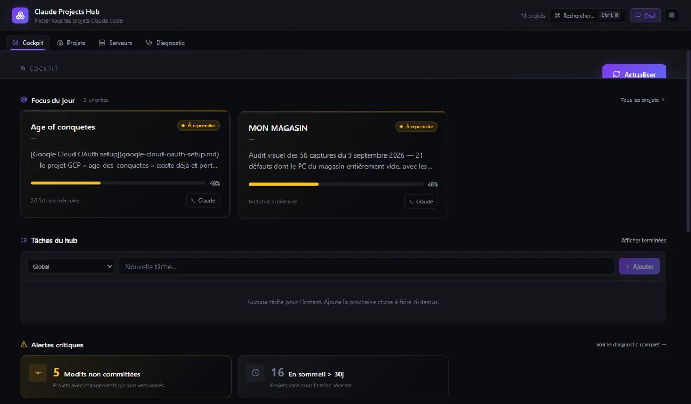

Application Electron qui détecte automatiquement tes projets (Node, Python, .NET, scripts batch), montre où tu en es dans chacun, et te laisse les lancer ou les arrêter en un clic, avec ouverture directe dans VS Code ou Claude Code.
Projet privé — présenté ici en description et captures. Code et téléchargement non publics.

Les projets à reprendre en priorité, avec l'avancement lu depuis la mémoire de Claude Code.
Détection automatique du type de projet et de la commande de démarrage.
Alerte sur les modifications non commitées et sur les projets endormis depuis plus de 30 jours.
Liste de tâches par projet et recherche rapide au clavier (Ctrl+K).